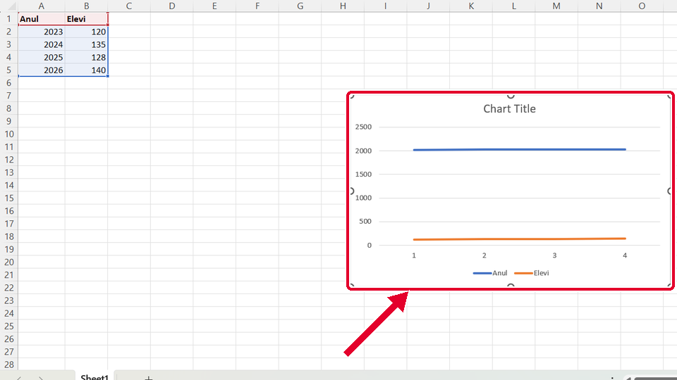
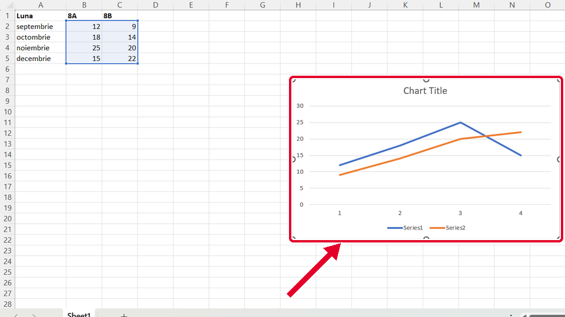
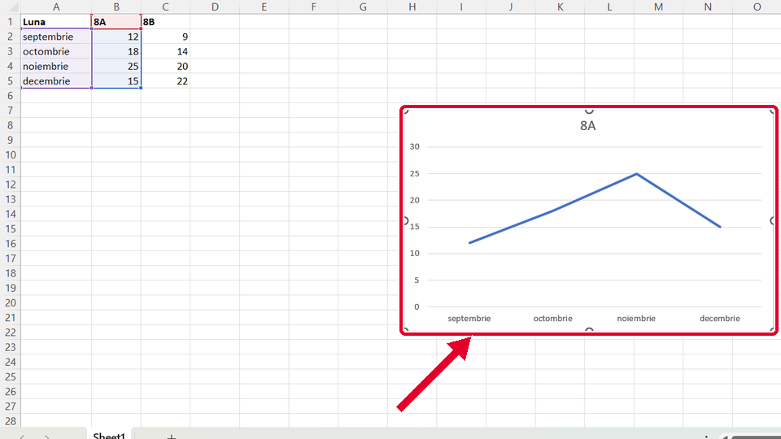
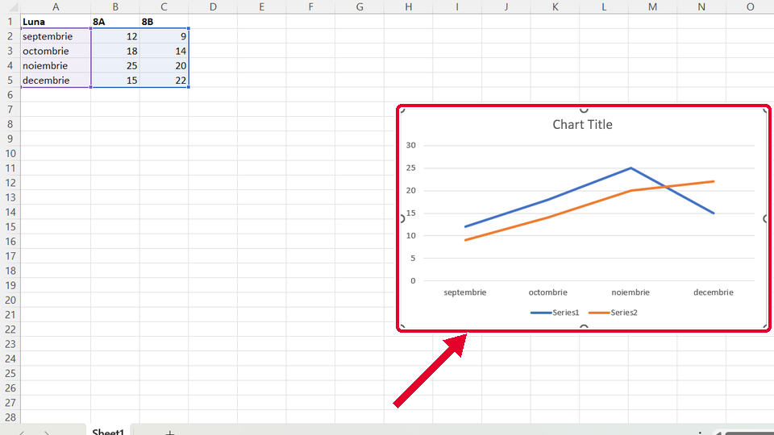

Început
Graficul linie din tabel
Taste: Spațiu = pauză / continuă · ← și → = pasul anterior / următor · cu Tab ajungi la „Rulează singur”; acolo Spațiu îl pornește sau îl oprește. Poți apăsa și pe film.

Legat de asta
Se deschid într-o filă nouă, ca să nu pierzi filmul de aici.
- Același gestScris îngroșat cu Ctrl+B ↗
Tot o selecție prin tragere: ții apăsat clic stânga pe prima celulă și tragi până la ultima.
- Același gestSortezi tot tabelul după o coloană ↗
Tot o filă din panglică, apoi un buton de pe ea: fila Date (Data) și butonul care sortează.
Dacă nu-ți iese
Alege ce vezi pe ecran.
Graficul are două linii, Anul și Elevi, iar jos scrie 1, 2, 3, 4 în loc de ani.

De ce: Anii sunt numere, nu text, așa că Excel îi desenează ca încă o serie. Drept nume pentru jos ia doar textul.
Ce faci:
- Cât graficul e încă ales (are chenar în jur), apeși Delete: graficul dispare.
- Golești A1: clic pe A1 și Delete. Celula din colț rămâne goală.
- Selectezi A1:B5 și inserezi din nou graficul.
Taste: Delete
În legendă scrie Series1 și Series2, iar jos 1, 2, 3, 4 în loc de luni.

De ce: Ai selectat doar numerele, fără antet (8A, 8B) și fără coloana cu lunile. Excel nu mai știe cum se numesc datele și le numerotează.
Ce faci:
- Cât graficul e încă ales (are chenar în jur), apeși Delete: graficul dispare.
- Selectezi A1:C5: apeși pe A1, ții apăsat și tragi până la C5.
- Inserezi din nou graficul: Inserare (Insert), butonul cu linie, Linie (Line).
Taste: Delete
Graficul are o singură linie, a clasei 8A; linia lui 8B lipsește, iar sus scrie doar 8A.

De ce: Ai dat drumul la mouse pe B5, înainte de coloana C. Ce nu e selectat nu intră în grafic.
Ce faci:
- Cât graficul e încă ales (are chenar în jur), apeși Delete: graficul dispare.
- Selectezi A1:C5: apeși pe A1, ții apăsat și tragi până la C5.
- Inserezi din nou graficul: Inserare (Insert), butonul cu linie, Linie (Line).
Taste: Delete
Jos sunt lunile, dar în legendă scrie Series1 și Series2 în loc de 8A și 8B.

De ce: Ai pornit selecția de pe A2, deci rândul 1, cu 8A și 8B, a rămas afară. Din antet ia Excel numele seriilor.
Ce faci:
- Cât graficul e încă ales (are chenar în jur), apeși Delete: graficul dispare.
- Selectezi A1:C5: apeși pe A1, ții apăsat și tragi până la C5.
- Inserezi din nou graficul: Inserare (Insert), butonul cu linie, Linie (Line).
Taste: Delete